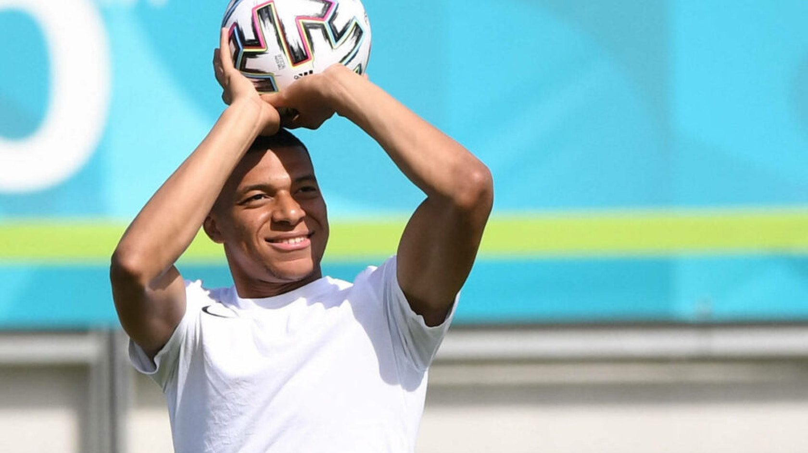

Conmebol


Neymar Jr

Lionel Messi

Cristiano Ronaldo

Paoulo Dybala

Mesut Ozil

Mauro Lcardi

Di Maria

Kylian Mbappe

Mohamed Salah

Harry Kane

Kevin De Bruyne

Philippe Coutinho
All Highlights
Copa America 2021
Video Highlights and interviews.Copa America.
Messi Argentina beat Brazil to win Copa America.
Argentina beat Brazil at the Maracanã to win the
CONMEBOL Copa America.

Sports Apparel
Fan Gear at Fanatics
2021
Shelina Zadorsky of Canada poses
for a portrait during.
Women's Olympic Football Tournament Tokyo 2020.
